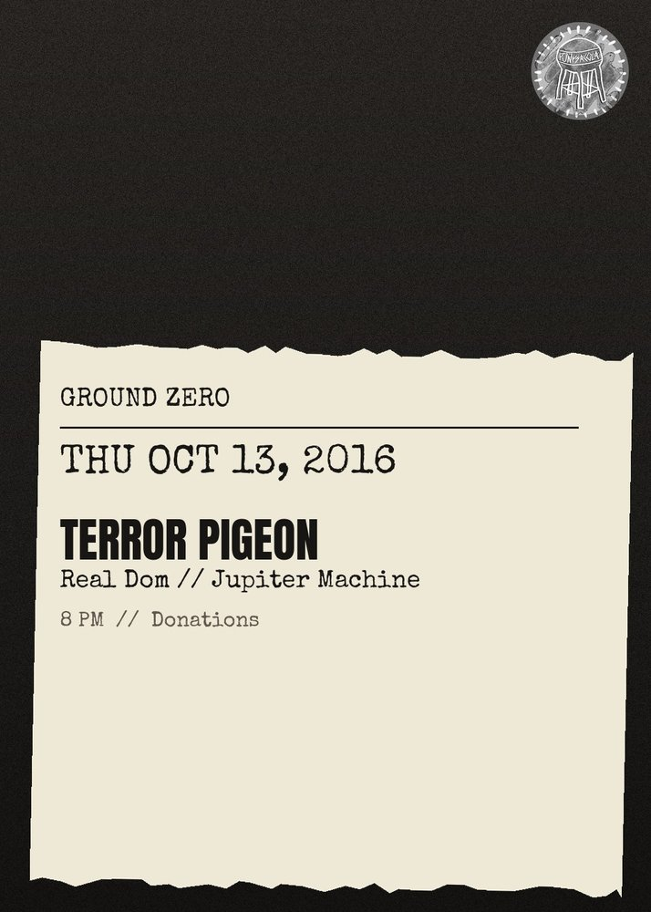

Terror Pigeon, Real Dom, Jupiter Machine
TERROR PIGEON!\nGround Zero RETURNS\nATTN: There is a large parking lot with a gate on J street, across from 9 N J. Please park here and only here! There will be a sign that will give you assurance. \nDONATIONS\nASK A FRIEND FOR WHERE THE FUCK THIS IS\n\n\"It\u2019s nearly impossible to stand on the sidelines of a Terror Pigeon! Show. Well it\u2019s possible, but you\u2019d be missing the very reason people come: to be part of the sweaty disco pileup.\" - New York Magazine\n\n\"The happiest, most pure moment of music this year... Based on these five minutes, I'd follow Terror Pigeon! blindly to the ends of the earth.\" - Stereogum\n\nhttps:\/\/www.youtube.com\/watch?v=2PKC2lKR79Q\n\nREAL DOM\nhttps:\/\/www.youtube.com\/watch?v=VMuQ7ib1E3g\nhttps:\/\/www.youtube.com\/watch?v=TDtRVliohgw\n\nSET TIMES:\nish!\n8:00 - Real Dom\n8:30 - Terror Pigeon\n9:15 - Jupiter Machine